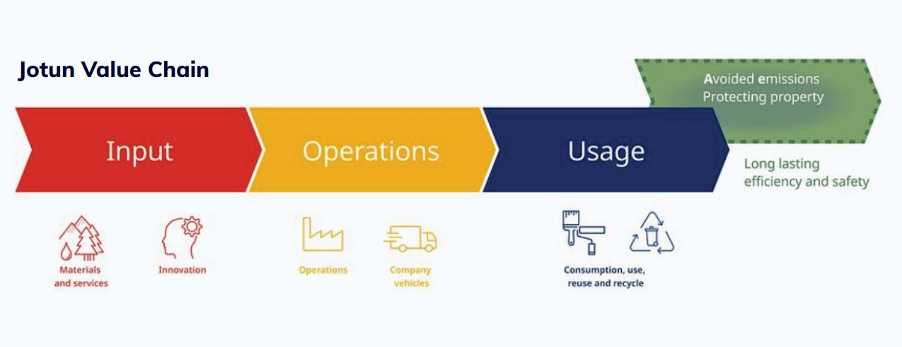
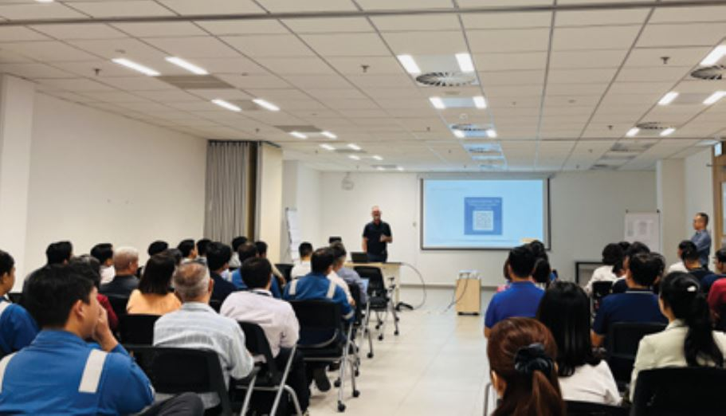
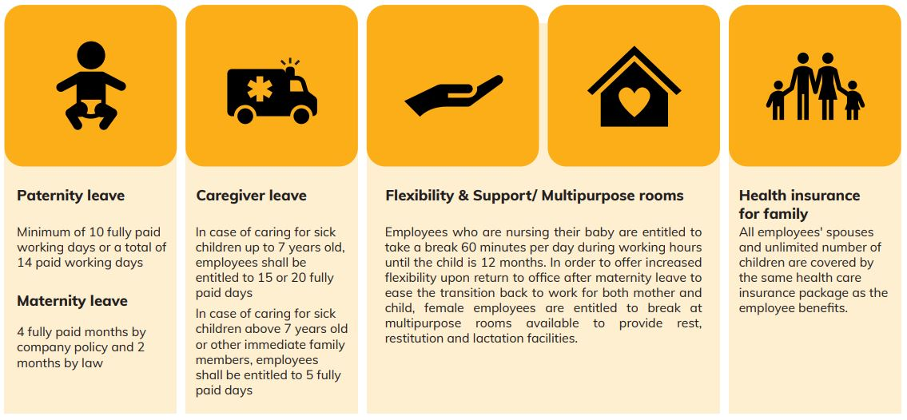
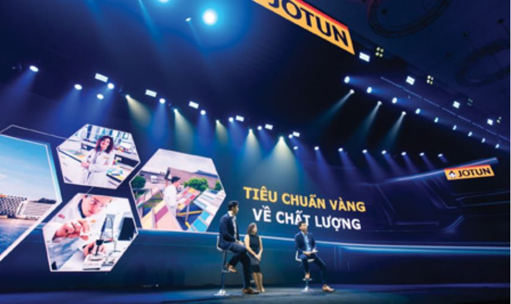
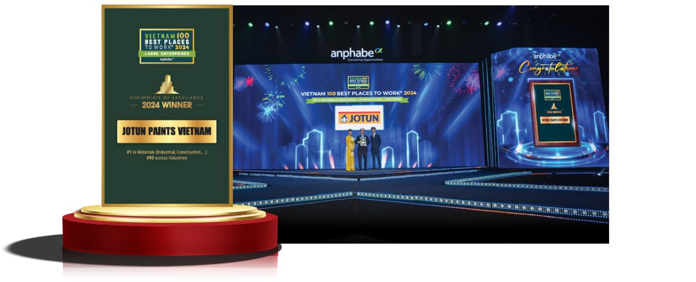

Thành lập năm 1926 và có trụ sở chính tại Na Uy, Jotun là một trong những nhà sản xuất sơn và chất phủ hàng đầu thế giới, hoạt động tại hơn 100 quốc gia với hơn 10.000 nhân viên. Tại Việt Nam, Jotun hiện diện từ năm 1994 và vận hành hai nhà máy cùng nhiều văn phòng bán hàng và trung tâm phân phối trên toàn quốc. Jotun được biết đến với cam kết về chất lượng, đổi mới và phát triển con người. Jotun Việt Nam đang từng bước xây dựng nền tảng vững chắc cho sự phát triển bền vững bằng cách tiếp cận nhân văn – lấy con người làm trung tâm.
Tại Jotun, văn hóa doanh nghiệp không chỉ là khẩu hiệu, mà còn là cách sống. Giá trị cốt lõi của công ty gồm: TRUNG THÀNH, CHĂM SÓC, TÔN TRỌNG và DÁM NGHĨ DÁM LÀM. Đây chính là 4 trụ cột tạo nên 'Tinh thần Chim cánh cụt Jotun', là kim chỉ nam giúp Jotun trao quyền cho nhân viên và thúc đẩy thành công lâu dài.
Jotun nuôi dưỡng sự trung thành bằng niềm tin, sự minh bạch và định hướng chung giữa nhân viên và mục tiêu công ty. Từ mô hình Kỳ vọng Lãnh đạo đến Chuỗi Giá trị Jotun, phát triển năng lực lãnh đạo được tích hợp ở mọi cấp độ.

Các hội thảo thường niên 'Từ chiến lược đến thực thi' đảm bảo rằng đội ngũ quản lý luôn đồng hành cùng định hướng kinh doanh và đóng vai trò là đại sứ văn hóa doanh nghiệp. Những sáng kiến này giúp tăng cường kết nối nội bộ và tinh thần sở hữu chung, góp phần vào tỷ lệ nghỉ việc thấp và mức độ gắn kết cao.

- Hội thảo Từ Chiến lược đến Triển khai được tổ chức hàng năm để phù hợp với Chiến lược Tập đoàn và Kế hoạch Định hướng Khu vực & Công ty.
- Hội thảo Lãnh đạo và Quản lý dành cho các nhà quản lý cấp trung.
- Một phần của Danh mục Đào tạo Jotun được giới thiệu trong vòng đời nhân viên.
Chăm sóc tại Jotun vừa mang tính chính sách vừa mang tính cá nhân sâu sắc. Chương trình Penguin CARE cung cấp chính sách nghỉ thai sản mở rộng, hỗ trợ người chăm sóc và bảo hiểm sức khỏe toàn diện cho gia đình nhân viên – bao gồm cả vợ/chồng và số lượng con không giới hạn.

Jotun cũng triển khai chương trình Hoạt động Vì sức khỏe, chú trọng đến cả thể chất, tinh thần và đời sống xã hội. Đây là yếu tố nổi bật trong văn hóa doanh nghiệp của Jotun, với niềm tin rằng: nhân viên khỏe mạnh sẽ là người hạnh phúc và hiệu quả.

Giá trị TÔN TRỌNG được thể hiện rõ qua cam kết của Jotun đối với sự đa dạng và hòa nhập. Hiện nay, phụ nữ chiếm 26% trong đội ngũ lãnh đạo, và công ty đang tích cực hướng đến mục tiêu toàn Tập đoàn đạt 30% vào năm 2030.


Jotun tuyển dụng công bằng và đánh giá thường xuyên để đảm bảo cân bằng giới trong từng phòng ban. Học viện Jotun hỗ trợ nhân viên từ mọi nền tảng phát triển sự nghiệp, giúp tạo dựng môi trường tôn trọng lẫn nhau và nâng cao năng lực nhân viên.


Chương trình Global Mobility giúp nhân viên phát triển vượt khỏi biên giới. Họ được rèn luyện kỹ năng và mở rộng góc nhìn toàn cầu, từ đó góp phần lan tỏa tư duy quốc tế trong toàn tổ chức.


Tại Jotun, “Dám nghĩ dám làm” không chỉ là tinh thần – mà là hành động cụ thể để trao quyền cho nhân viên lên tiếng, chủ động và sáng tạo. Chương trình Speak-Up ra mắt năm 2023 đã mang đến một nền tảng an toàn và có cấu trúc để nhân viên góp ý và đề xuất cải tiến. Những ý tưởng từ kênh này đã được hiện thực hóa thành các dự án giúp nâng cao hiệu quả vận hành rõ rệt. Thông qua tinh thần Dám nghĩ dám làm, Jotun vun đắp một văn hóa nơi cải tiến liên tục và đối thoại cởi mở luôn song hành.

Và có lẽ mạnh mẽ nhất, tinh thần dám nghĩ dám làm tại Jotun chính là nguồn lực nuôi dưỡng một trong những thế mạnh lớn nhất của công ty: đổi mới – kết quả tự nhiên của một nền văn hóa lấy con người làm trung tâm. Nhân viên được khuyến khích tư duy sáng tạo và đề xuất những ý tưởng nhằm nâng cao cả trải nghiệm khách hàng lẫn trách nhiệm với môi trường.
Từ lớp sơn Jotashield Infinity với khả năng bảo vệ thời tiết vượt trội, đến dòng sơn tĩnh điện Durasol đạt nhiều chứng nhận LEED quốc tế, các sáng kiến sản phẩm tại Jotun đều được hình thành từ mối liên kết chặt chẽ giữa nghiên cứu phát triển (R&D), vận hành và nhu cầu thị trường.
Cam kết bền bỉ với đổi mới không chỉ nâng cao hiệu quả kinh doanh – mà còn tiếp thêm động lực cho hành trình phát triển bền vững của Jotun.


Với 10 năm liên tiếp góp mặt trong Top 100 Nơi Làm Việc Tốt Nhất Việt Nam và được vinh danh là Nhà sản xuất vật liệu số 1 năm 2024, Jotun chính là minh chứng rõ ràng cho sức mạnh của văn hóa dựa trên giá trị. Khi giá trị là kim chỉ nam và con người được đặt lên hàng đầu, thành công không phải là đích đến – mà là kết quả tất yếu.


Tel: (028) 62682222 - EXT.122
(+84) 908 267 759
Email: clientsolution@anphabe.com
Follow us